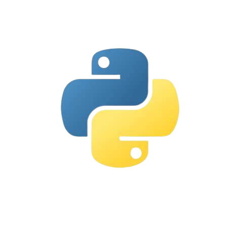

Skills


"Saya adalah seorang Web Developer dan Content Creator yang berbasis di Bali. Ketertarikan saya pada pengembangan web dimulai sejak masa kuliah dan terus saya geluti hingga sekarang. Perkembangan teknologi yang pesat di dunia pengembangan web semakin memotivasi saya untuk terus belajar dan berkembang."
Hire MeMembuat desain antarmuka yang menarik dan pengalaman pengguna yang efisien.
Membangun website yang responsif dan fungsional menggunakan teknologi terbaru.
Menyediakan layanan pembuatan video profesional untuk berbagai keperluan.
Saya memiliki pengalaman sebagai Web Developer di Tokopedia, salah satu platform e-commerce terbesar di Indonesia. Dalam peran ini, saya berkontribusi pada pengembangan fitur-fitur baru, optimasi performa website, serta integrasi berbagai layanan API untuk pengalaman pengguna yang lebih baik.
Saya juga merupakan pemilik dan pengembang dari produk parfum premium "Nuy Perfume". Produk ini menghadirkan aroma yang unik dan tahan lama, dengan kemasan yang elegan. Selain itu, saya terlibat dalam pengembangan branding dan strategi pemasaran digital untuk produk ini.
Saya pernah mendesain antarmuka dan pengalaman pengguna (UI/UX) untuk aplikasi pembelajaran. Desain yang saya buat berfokus pada kemudahan penggunaan, estetika modern, serta pengalaman belajar yang interaktif dan efektif.